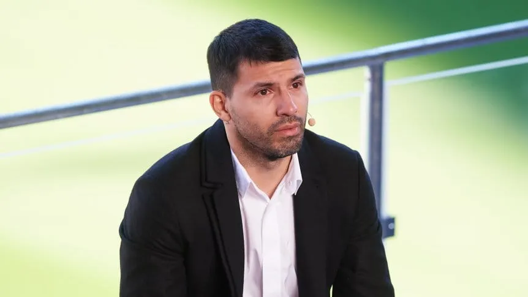
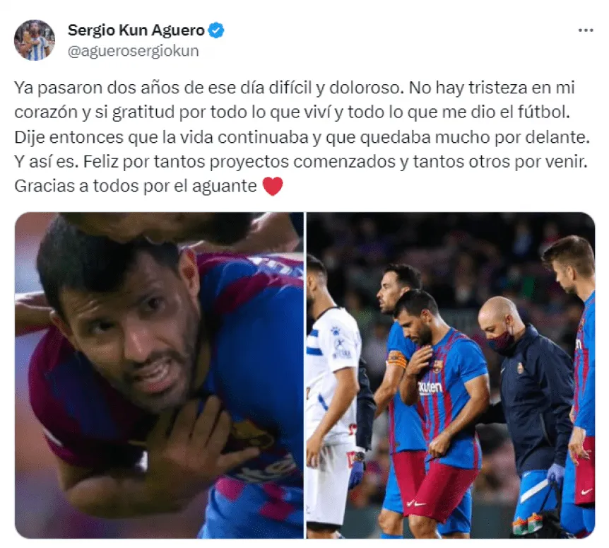
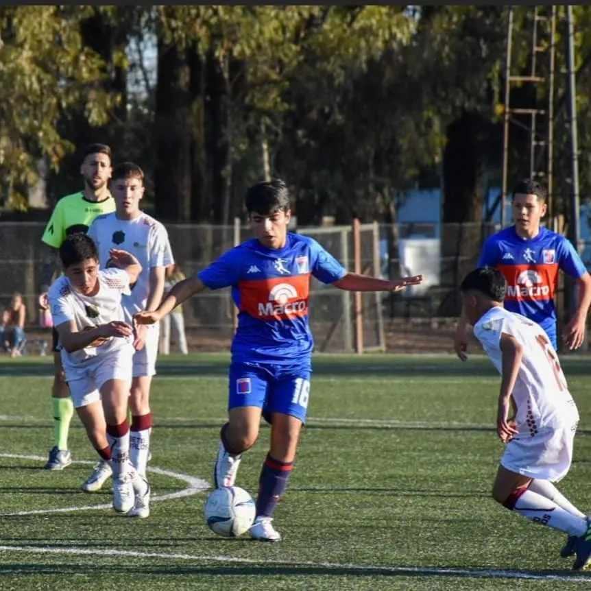

Inicio |
Novedades |
Canal de youtube
El sentido posteo del Kun Agüero a dos años de su último partido como profesional: "No hay tristeza en mi corazón"
El exdelantero argentino recordó en sus redes sociales el momento en el que sufrió en pleno partido de Barcelona una arritmia cardíaca, que tiempo después lo obligó a retirarse.
El 31 de octubre no es una fecha cualquiera en la vida de Sergio Agüero. Un día como hoy, pero hace dos años, el Kun sufrió un fuerte dolor en el pecho mientras jugaba en Barcelona contra Alavés y debió abandonar la cancha, sin imaginarse que ese sería su último partido como profesional.
Una arritmia cardíaca, detectada a tiempo, lo obligó a retirase y así recordó ese duro momento en sus redes sociales.

"Fue un día difícil y doloroso. No hay tristeza en mi corazón y si gratitud por todo lo que viví y todo lo que me dio el fútbol. Dije entonces que la vida continuaba y que quedaba mucho por delante. Y así es", abrió el histórico goleador de Manchester City en su cuenta de Twitter e Instagram,
donde además compartió dos fotos de aquel susto en el campo de juego.
Y siguió el además fundador y CEO de KRÜ Esports: "Feliz por tantos proyectos comenzados y tantos otros que están por venir. Gracias a todos por el aguante".

Lamentablemente, Agüero pudo defender la camiseta blaugrana en cinco partidos, aunque le bastó para convertirle un gol a Real Madrid en el Clásico de España. Llegó en julio de 2021, ilusionado con tirar paredes en ataque con Lionel Messi, pero su gran socio en la Selección Argentina se marchó semanas después a PSG.
Luego de varios exámenes y controles, los médicos le prohibieron al Kun seguir jugando y por eso debió colgar los botines. Actualmente, se lo ve muy involucrado con los streams y, además, fundó un equipo en la Kings League llamado Kunisports.
El Kun Agüero reveló los consejos que le da a su hijo Benjamín en Tigre: "Jugó bien, tiene que seguir mejorando”
El exdelantero visitó este sábado el predio de Rincón y fue un hincha más de la Novena del Matador, donde juega Benja..

ergio Agüero es uno de los goleadores históricos de Argentina, leyenda en Manchester City, emblema en Atlético de Madrid y querido en Barcelona, su último club antes de retirarse por un problema cardíaco. Sin embargo, este sábado el Kun fue un hincha más de la Novena División de Tigre, donde juega su hijo Benjamín.
Luego del encuentro en el predio de Rincón, que terminó con triunfo 2-0 sobre Barracas Central, el máximo artillero de los Citizens se refirió a la actuación de su hijo y de sus compañeros: “Se tienen que divertir, pasarla bien. Hoy la verdad que jugaron bien, Benja jugó bien y tiene que seguir mejorando”. Y remarcó, en diálogo con Tigre Minuto Cero: “Estoy contento, los chicos están contentos cuando ganan y ahora tienen que meterse para la siguiente semana”.
Sobre la explosión de algunos juveniles que ya empiezan a despertar miradas y elogios en el Matador, Agüero fue claro y pidió no apurar sus procesos en las Inferiores: “Son chicos, están en un momento de crecimiento, de saber algunos conceptos y eso es fundamental para poder llevarlo cuando uno es más grande”.
